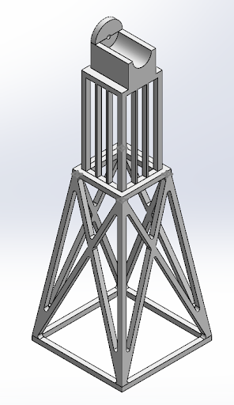

This project focused on designing and building a small-scale horizontal-axis wind turbine to convert wind energy into electrical power. The system included a 3D-printed rotor, structural tower, and generator housing designed within strict size and weight constraints.
The turbine design was a three-blade horizontal-axis system with a blade angle of attack of 4.5 degrees. The tower was constructed as a two-level structure to improve stiffness and stability, with reinforced corner supports to distribute load more effectively. Finite Element Analysis (FEA) was performed in SolidWorks to evaluate stress distribution, displacement, and safety factors before fabrication.
Testing revealed that while the turbine successfully generated electrical power, performance was limited due to tower height shortfall and suboptimal blade aerodynamics. The reduced height (14.25 in vs. 16 in requirement) affected airflow alignment with the rotor.
The project demonstrated the full engineering design cycle including conceptual design, CAD modeling, simulation, fabrication, and experimental testing. Although performance targets were not fully met, the system successfully generated electrical power and provided strong insight into wind turbine aerodynamics and structural design tradeoffs.